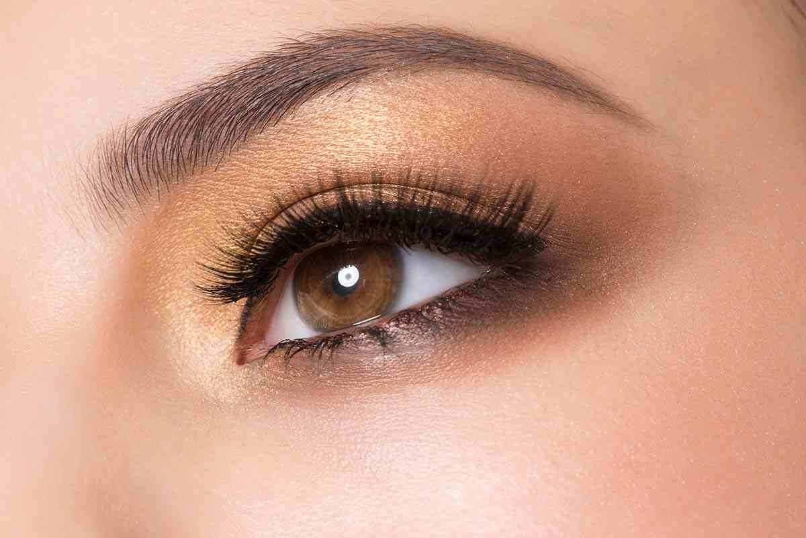

¡Hola hermosas! 💁♀️
Hoy compartiremos algunos consejos de maquillaje especialmente diseñados para resaltar la belleza de tus ojos marrones. ¡Vamos a realzar tu mirada! 💖
Paso 1: Cuida tus Ojos Marrones 🌰
Antes de aplicar el maquillaje, asegúrate de que la piel alrededor de tus ojos esté bien cuidada e hidratada. Utiliza productos adecuados para tu tipo de piel para resaltar la belleza natural de tus ojos marrones. ¡Mantén esa hermosura radiante! 🌟
Paso 2: Realza con Tonos Cálidos 🔥
Opta por sombras en tonos cálidos como el bronce, dorado o cobre. Estos tonos resaltarán y realzarán la profundidad de tus ojos marrones. ¡Deja que tus ojos brillen con luz propia! ✨
Paso 3: Delineado Sutil para Elegancia 👁️
Un delineado sutil en tonos marrones o negros aportará elegancia a tu mirada. Define tus ojos de manera suave para resaltar la forma natural de tus ojos marrones. ¡Logra una mirada cautivadora! 👌
Paso 4: Rímel para Pestañas Impactantes 🚀
Aplica varias capas de rímel para dar volumen y longitud a tus pestañas. Unas pestañas impactantes enmarcarán tus ojos marrones y resaltarán tu belleza. ¡Deja que tus pestañas hablen por sí mismas! 👁️🗨️
Paso 5: Cejas Bien Definidas 🌈
Define tus cejas con precisión. Unas cejas bien arregladas complementarán tus ojos marrones y aportarán equilibrio a tu rostro. ¡Encuadra tu mirada de manera perfecta! 💖
Paso 6: Labiales que Complementen 💄
Elige labiales en tonos que complementen tus ojos marrones. Tonos como terracota, berry o nude pueden resaltar la belleza de tus labios y ojos. ¡Un toque final armonioso! 💋
¡Y ahí lo tienes, hermosas! Algunos consejos simples pero efectivos para resaltar la belleza única de tus ojos marrones. ¡Que tu mirada deslumbre en cada ocasión! 🌈